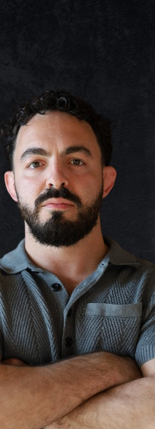

Work with Victor Pierantoni
1:1 Performance Coaching for Founders and Athletes
Bring a decision you keep revisiting, a conversation you are putting off or a moment of pressure you want to handle differently.
Apply for 1:1 CoachingPerformance coaching at Liberation Coach is individual work with Victor Pierantoni on how you respond to a challenge and what you choose to do next. Founders, business owners and athletes aged 18 and older can bring a specific situation, examine the assumptions around it and consider a practical next step.
Online sessions with Victor. Circle access for coaching members. Apply to take the next step: a discovery Zoom call with Victor, with no obligation to proceed with coaching.
For Founders and Business Owners
Leading a business can put you between a decision and the people who need an answer. You might be postponing feedback to a colleague or deciding which responsibilities to hand over. Start with a situation in your business and the response you want to change.
Explore founder coachingFor Adult Athletes
You may trust a skill in practice and begin to doubt it in competition. Pressure can pull your concentration toward the last mistake or what might happen next. Start with a moment when your focus or confidence changed and what you noticed.
Explore coaching for athletesTurn a Broad Concern Into Something You Can Work On
You might call it a mental block: you keep second-guessing a decision or putting off a conversation. Start with that specific situation.
- What happened?
- What are you assuming it means?
- What do you need to find out before deciding?
In performance coaching, you and Victor work together on those questions. Personal growth can mean a change you choose in your own life, such as asking a question you have avoided, checking an assumption or taking an action you chose. You can then review what you did and what you learned.
See what a session can involve
A Coach With a Background in Martial Arts and Philosophy
Victor Pierantoni is the coach behind Liberation Coach. His background includes martial arts and the Zen and Stoic ideas he has discussed through Zen Stoic. His teaching considers attention, emotional experience and the choices people make in everyday life.
Hear Victor discuss these ideas in Super Mamas, episode 235 (2020) and Acta Non Verba, episode 156 (2023). These conversations give background to his ideas.
Read Victor's backgroundReflection and Emotional Awareness
Victor's emotional-awareness teaching includes noticing bodily sensations associated with a feeling. His reflective questions examine the situation and your interpretation of it. The Method page explains these parts of his work in plain language.
Understand Victor's approachA Conversation Is the Next Step
- 1.
Apply
Describe what you would like to work on.
- 2.
Meet Victor on Zoom
The next step is a discovery call with Victor to explore fit. There is no obligation to proceed with coaching.
- 3.
Decide Whether to Work Together
If you choose to begin coaching, sessions take place online and coaching members receive Circle access.
Are Sessions Online?
Yes. Coaching sessions take place online.
Is Circle Access Included?
Yes. All coaching members receive Circle access.
What Happens After I Apply?
The next step is a discovery Zoom call with Victor. There is no obligation to proceed with coaching.
Bring the Situation You Want to Approach Differently
Explore Victor's background and how he approaches coaching, then describe what you would like to work on. Coaching is educational and does not replace medical, psychological, legal or financial advice.
Your next step is a discovery Zoom call with Victor, with no obligation to proceed with coaching.